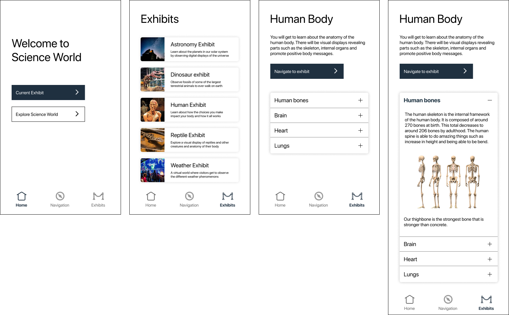
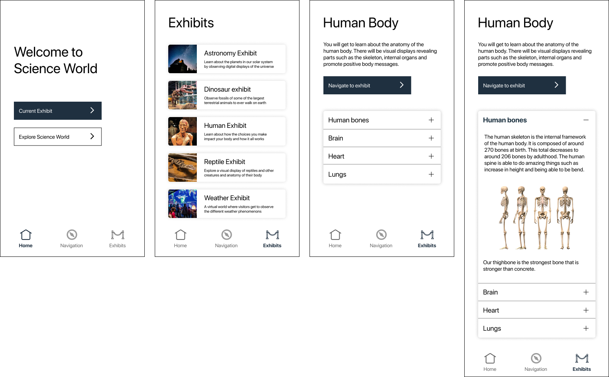

Understanding Our Client
To better understand the challenges faced by Science World’s visitors, our team conducted both online and on-site field research. I interviewed individuals from a wide range of ages and demographics to gather insights into their personal experiences at the institution and areas they felt could be improved. Based on our affinity mapping and grouping exercises, we initially framed Science World’s primary audience as families with young children, which suggested that visitors outside this age range might feel excluded or disengaged by certain exhibits. I primarily focused on developing user personas, using insights drawn from our finalized research groupings and problem framings.
Reframing
After reflecting on our earlier framings, we shifted our focus toward improving the shared experience of children and their caregivers, rather than addressing audiences outside this group, as they are Science World’s primary visitors. We conducted a second round of field research, narrowing our scope to parents and elementary-aged children who had previously visited the institution. During these interviews, I moved beyond asking what parents wanted to change and instead focused on understanding their personal emotions, perceptions, and experiences throughout their visit.

Our team explored the idea of designing an interface that offers an engaging and educational experience for both children and their caretakers. While inclusivity was important, we placed greater emphasis on the child, as they are Science World’s primary audience and the caretaker’s main priority when visiting. To address our problem statement, the lack of exhibits that encourage family interaction, we proposed a mobile app that enhances learning opportunities for families of all ages, allowing both children and caretakers to enjoy the exhibits together. In addition to its educational features, the app includes transportation and navigation tools to support first-time visitors, helping them efficiently find and explore exhibits that match their interests and maximize their time at the institution.
Refining and Bringing it Together
Since I had the clearest understanding of the imposed problem statements and solutions during the final week, I focused on doing the copywriting in the design pitch deck after my team and I reflected on improving our design solution. I also refined the journey maps, collaborated on the wireframes, and brought together the final copy of the user flowchart after the drafts from each member were made.


 
